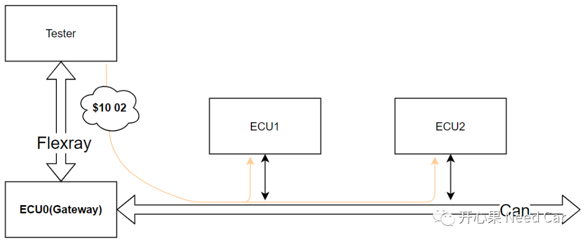

开心果 Need Car · 2022-04-18T11:45:00+08:00 · 微信原文
基于Uds刷写过程中，$10 02服务的处理相对琐碎，不是实现的难度有多大，而是需求确认比较麻烦。本文讨论的焦点：功能寻址，由网关节点（Gateway）发送$10 02诊断请求时，Gateway响应上位机的时机问题。
需求：功能寻址发送$10 02，P2Server_max = 50ms，诊断路由时间TGateway_max = 10ms。
解释一下这个需求，功能寻址发送$10 02给ECU0(Gateway)，ECU0转发给ECU1和ECU2，ECU1和ECU2需要50ms内响应ECU0，ECU0需要60ms(P2Server_max + TGateway_max )内响应Tester。
功能寻址发送$10 02示意如下所示：

1、开发实现细节
需求明确了，开发时我们需要注意啥？对于ECU1和ECU2来说，P2Server_max 内响应ECU0就满足需求，但是ECU0立马回复Tester可以吗？比如ECU0在10ms（满足响应时间＜P2Server_max + TGateway_max ）时刻回复Tester正响应。从需求上看没问题，但是此时机，个人觉得并不合适。为什么呢？如果ECU1和ECU2均能通过$10 02成功复位到各自的Bootloader程序，对整个升级过程没有太大影响；如果ECU1在40ms时刻回复ECU0否定响应，之后继续对ECU2的升级，意味着什么呢？意味着ECU1依然在其Application程序中，可能存在ECU2诊断报文（物理寻址）被ECU1的应用报文抢占而升级失败。由于ECU1没有进入Bootloader程序，有没有收到ECU2节点对应的应用报文，会导致ECU1上报节点丢失的故障。
所以，怎么处理合适呢？ECU0应该等待ECU1、ECU2一段时间再响应Tester，比如50ms。确定ECU1和ECU2都响应ECU0以后，ECU0在响应上位机更合适。为什么定50ms合适呢？ECU0转发给ECU1和ECU2以后，ECU1和ECU2必须响应ECU0，而ECU0响应Tester又需要一点时间，但是在60ms内回复Tester符合需求。这样不仅识别到ECU1和ECU2的响应情况，且ECU0、ECU1、ECU2都能满足各自的时间要求。
2、除$11 01、$10 02以外的复位动作开发要点
有时会碰到一些不常见的需求。比如：Application复位到Bootloader的条件除了$11 01、$10 02以外，还可以是某个应用报文（比如：CanID 0x222，对应的BootStatus_Signal = 0x01）。意思是：ECU收到CanID = 0x222的报文，该报文中的信号BootStatus_Signal = 0x01，需要从Application复位到Bootloader。复位就复位呗，有啥难的？确实不难实现，但是要注意：$11 01、$10 02均是诊断指令，由诊断报文发送，诊断指令需要满足前置条件的检查，否则回复NRC0x22，一般前置条件包含：KL15有效性，车速，诊断电压，特定参数模式等。如果使用应用报文方式，就需要注意这些前置条件的检查，如果这些条件不满足，BootStatus_Signal不能赋值 0x01，不能让其由Application复位到Bootloader，否则会带来安全隐患。比如：重攻击中，不断地模拟该应用报文发送BootStatus_Signal = 0x01，使得程序不断复位。
如果使用应用报文让程序由Application复位到Bootloader，那么BootStatus_Signal = 0x01和$10 02连续请求可以吗？这两个条件，包括$11 01是"或"的关系，这样的发送顺序允许，但是要注意：ECU收到BootStatus_Signal = 0x01信号以后，很快又收到$10 02请求，$10 02请求可能不被处理，因为程序此时在进行复位处理，诊断栈和通信栈已经关闭，直到进入Bootloader程序，通信栈和诊断栈开启以后才能处理后续的诊断请求。
说到了$10 02，就不得不提$10 82，使用功能寻址，且正响应抑制位置起时，上述ECU0的等待时间还是需要的，因为ECU1或者ECU2的否定响应，ECU0可以收到，所以，不能因为发送的是$10 82，觉得ECU0就没必要等待ECU1、ECU2一段时间。
提示：本文提到了功能寻址$10 02，这种操作因OEM需求而不同，每家的刷写流程可能不同。
往期精彩回顾